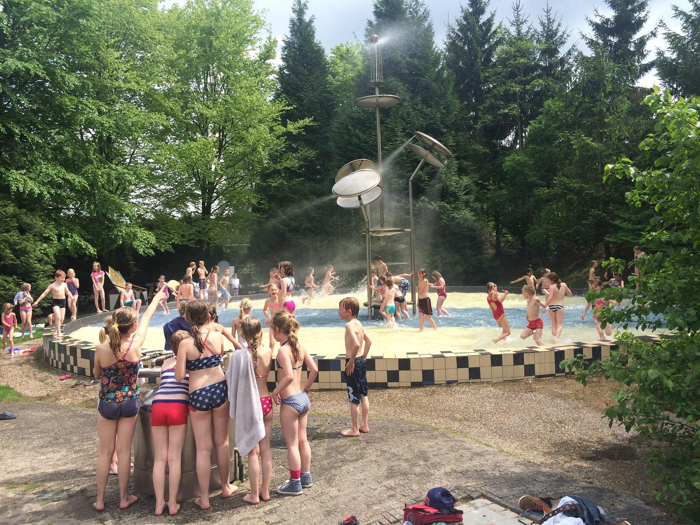
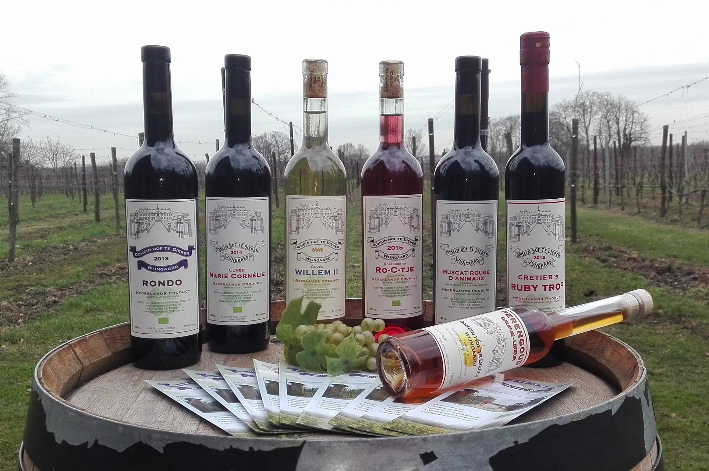

De Spelerij in Dieren is een bijzonder speel- en ontdekpark en bestaat uit twee onderdelen: De Spelerij en De Uitvinderij. De Spelerij staat vol kunstige en interactieve speelobjecten. Zo is er een hijskraan waarmee ze zelf kunnen scheppen en draaien en zijn er talloze kunstige speeltoestellen die ze zelf in beweging kunnen brengen. Tegelijkertijd spelen en ontdekken! In De Uitvinderij maken kinderen de mooiste kunstwerken. Maak bijvoorbeeld een sleutelhanger van plexiglas of een spettertekening in de verfmachine. En dat helemaal zelf, zonder hulp van een volwassene. Na al die inspanning trek gekregen? Kids mogen hier ook zelf broodjes bakken!
Youp en Riet Cretier nodigen u van harte uit om te komen kijken en proeven op deze Nederlandse biologische wijngaard van ruim twee hectare. Via het keuzemenu hierboven kunt u meer informatie ophalen over de wijngaard, de voortreffelijke Nederlandse biologische wijnen en de mogelijkheden voor wijnproeverijen en rondleidingen. Zowel individueel als met een groep (vanaf 15 personen) bent u van harte welkom om te genieten in een Provençaals mediterrane ambiance! Onze wijnwinkel, de Salon du Vin en het terras zijn dagelijks open van 13 tot 17 uur. Dus genieten van een glas wijn en uw wijnen kopen. Koud buiten? De houtkachel brandt. En wilt u onze wijnen online bestellen? Ga dan direct naar onze onze webshop! Vanaf 6 flessen gratis verzending!
